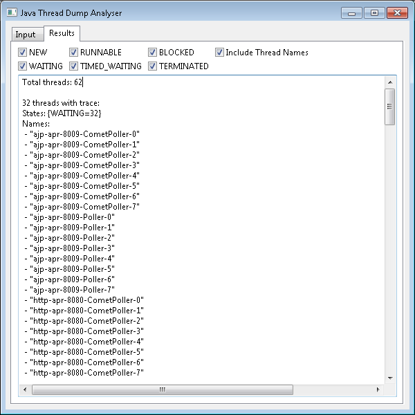

Java Thread Dump Analyser is a tool for quickly summarising lengthy Java thread dumps.
News: 25/10/2012: Add command line version. 08/08/2012: Fixes a bug which caused the last thread in a thread dump to be ignored.
One of the common types of diagnostics which a Java developer has to look at as a Thread Dump. This lists the stack trace of all the threads in the JVM. However, the generated output can be really tedious to scan through as some applications (e.g. Webapp containers such as Tomcat) can use hundreds of threads, many of which will have the same stack trace as they are idle threads waiting for work.
2011-08-19 17:46:25 Full thread dump Java HotSpot(TM) Client VM (20.0-b11 mixed mode, sharing): "RMI TCP Connection(2)-192.168.211.1" daemon prio=6 tid=0x040bdc00 nid=0x10d8 runnable [0x06cbf000] java.lang.Thread.State: RUNNABLE at java.net.SocketInputStream.socketRead0(Native Method) at java.net.SocketInputStream.read(SocketInputStream.java:129) at java.io.BufferedInputStream.fill(BufferedInputStream.java:218) at java.io.BufferedInputStream.read(BufferedInputStream.java:237) - locked <0x238ab718> (a java.io.BufferedInputStream) at java.io.FilterInputStream.read(FilterInputStream.java:66) at sun.rmi.transport.tcp.TCPTransport.handleMessages(TCPTransport.java:517) at sun.rmi.transport.tcp.TCPTransport$ConnectionHandler.run0(TCPTransport.java:790) at sun.rmi.transport.tcp.TCPTransport$ConnectionHandler.run(TCPTransport.java:649) at java.util.concurrent.ThreadPoolExecutor$Worker.runTask(ThreadPoolExecutor.java:886) at java.util.concurrent.ThreadPoolExecutor$Worker.run(ThreadPoolExecutor.java:908) at java.lang.Thread.run(Thread.java:662) Locked ownable synchronizers: - <0x238a9d80> (a java.util.concurrent.locks.ReentrantLock$NonfairSync) "JMX server connection timeout 68" daemon prio=6 tid=0x040bd800 nid=0x10bc in Object.wait() [0x06c6f000] java.lang.Thread.State: TIMED_WAITING (on object monitor) at java.lang.Object.wait(Native Method) - waiting on <0x237059f8> (a [I) at com.sun.jmx.remote.internal.ServerCommunicatorAdmin$Timeout.run(ServerCommunicatorAdmin.java:150) - locked <0x237059f8> (a [I) at java.lang.Thread.run(Thread.java:662) Locked ownable synchronizers: - None "RMI Scheduler(0)" daemon prio=6 tid=0x040bd000 nid=0x10b4 waiting on condition [0x06c1f000] java.lang.Thread.State: TIMED_WAITING (parking) at sun.misc.Unsafe.park(Native Method) - parking to wait for <0x23baed48> (a java.util.concurrent.locks.AbstractQueuedSynchronizer$ConditionObject) at java.util.concurrent.locks.LockSupport.parkNanos(LockSupport.java:198) at java.util.concurrent.locks.AbstractQueuedSynchronizer$ConditionObject.awaitNanos(AbstractQueuedSynchronizer.java:2025) at java.util.concurrent.DelayQueue.take(DelayQueue.java:164) at java.util.concurrent.ScheduledThreadPoolExecutor$DelayedWorkQueue.take(ScheduledThreadPoolExecutor.java:609) at java.util.concurrent.ScheduledThreadPoolExecutor$DelayedWorkQueue.take(ScheduledThreadPoolExecutor.java:602) at java.util.concurrent.ThreadPoolExecutor.getTask(ThreadPoolExecutor.java:947) at java.util.concurrent.ThreadPoolExecutor$Worker.run(ThreadPoolExecutor.java:907) at java.lang.Thread.run(Thread.java:662) Locked ownable synchronizers: - None "RMI TCP Connection(1)-192.168.211.1" daemon prio=6 tid=0x040bcc00 nid=0x10b0 runnable [0x06a8f000] java.lang.Thread.State: RUNNABLE at java.net.SocketInputStream.socketRead0(Native Method) at java.net.SocketInputStream.read(SocketInputStream.java:129) at java.io.BufferedInputStream.fill(BufferedInputStream.java:218) at java.io.BufferedInputStream.read(BufferedInputStream.java:237) - locked <0x236c4cc8> (a java.io.BufferedInputStream) at java.io.FilterInputStream.read(FilterInputStream.java:66) at sun.rmi.transport.tcp.TCPTransport.handleMessages(TCPTransport.java:517) at sun.rmi.transport.tcp.TCPTransport$ConnectionHandler.run0(TCPTransport.java:790) at sun.rmi.transport.tcp.TCPTransport$ConnectionHandler.run(TCPTransport.java:649) at java.util.concurrent.ThreadPoolExecutor$Worker.runTask(ThreadPoolExecutor.java:886) at java.util.concurrent.ThreadPoolExecutor$Worker.run(ThreadPoolExecutor.java:908) at java.lang.Thread.run(Thread.java:662) Locked ownable synchronizers: - <0x236c1b98> (a java.util.concurrent.locks.ReentrantLock$NonfairSync) "RMI TCP Accept-0" daemon prio=6 tid=0x0422e000 nid=0x10a0 runnable [0x06a3f000] java.lang.Thread.State: RUNNABLE at java.net.PlainSocketImpl.socketAccept(Native Method) at java.net.PlainSocketImpl.accept(PlainSocketImpl.java:408) - locked <0x23ba84b0> (a java.net.SocksSocketImpl) at java.net.ServerSocket.implAccept(ServerSocket.java:462) at java.net.ServerSocket.accept(ServerSocket.java:430) at sun.management.jmxremote.LocalRMIServerSocketFactory$1.accept(LocalRMIServerSocketFactory.java:34) at sun.rmi.transport.tcp.TCPTransport$AcceptLoop.executeAcceptLoop(TCPTransport.java:369) at sun.rmi.transport.tcp.TCPTransport$AcceptLoop.run(TCPTransport.java:341) at java.lang.Thread.run(Thread.java:662) Locked ownable synchronizers: - None "http-apr-8080-exec-10" daemon prio=6 tid=0x0422d800 nid=0xaa0 waiting on condition [0x069ef000] java.lang.Thread.State: WAITING (parking) at sun.misc.Unsafe.park(Native Method) - parking to wait for <0x28f44f20> (a java.util.concurrent.locks.AbstractQueuedSynchronizer$ConditionObject) at java.util.concurrent.locks.LockSupport.park(LockSupport.java:158) at java.util.concurrent.locks.AbstractQueuedSynchronizer$ConditionObject.await(AbstractQueuedSynchronizer.java:1987) at java.util.concurrent.LinkedBlockingQueue.take(LinkedBlockingQueue.java:399) at org.apache.tomcat.util.threads.TaskQueue.take(TaskQueue.java:104) at org.apache.tomcat.util.threads.TaskQueue.take(TaskQueue.java:32) at java.util.concurrent.ThreadPoolExecutor.getTask(ThreadPoolExecutor.java:947) at java.util.concurrent.ThreadPoolExecutor$Worker.run(ThreadPoolExecutor.java:907) at java.lang.Thread.run(Thread.java:662) Locked ownable synchronizers: - None "http-apr-8080-exec-9" daemon prio=6 tid=0x0422d400 nid=0x25c waiting on condition [0x0699f000] java.lang.Thread.State: WAITING (parking) at sun.misc.Unsafe.park(Native Method) - parking to wait for <0x28f44f20> (a java.util.concurrent.locks.AbstractQueuedSynchronizer$ConditionObject) at java.util.concurrent.locks.LockSupport.park(LockSupport.java:158) at java.util.concurrent.locks.AbstractQueuedSynchronizer$ConditionObject.await(AbstractQueuedSynchronizer.java:1987) at java.util.concurrent.LinkedBlockingQueue.take(LinkedBlockingQueue.java:399) at org.apache.tomcat.util.threads.TaskQueue.take(TaskQueue.java:104) at org.apache.tomcat.util.threads.TaskQueue.take(TaskQueue.java:32) at java.util.concurrent.ThreadPoolExecutor.getTask(ThreadPoolExecutor.java:947) at java.util.concurrent.ThreadPoolExecutor$Worker.run(ThreadPoolExecutor.java:907) at java.lang.Thread.run(Thread.java:662) Locked ownable synchronizers: - None "http-apr-8080-exec-8" daemon prio=6 tid=0x0422cc00 nid=0xbac waiting on condition [0x0694f000] java.lang.Thread.State: WAITING (parking) at sun.misc.Unsafe.park(Native Method) - parking to wait for <0x28f44f20> (a java.util.concurrent.locks.AbstractQueuedSynchronizer$ConditionObject) at java.util.concurrent.locks.LockSupport.park(LockSupport.java:158) at java.util.concurrent.locks.AbstractQueuedSynchronizer$ConditionObject.await(AbstractQueuedSynchronizer.java:1987) at java.util.concurrent.LinkedBlockingQueue.take(LinkedBlockingQueue.java:399) at org.apache.tomcat.util.threads.TaskQueue.take(TaskQueue.java:104) at org.apache.tomcat.util.threads.TaskQueue.take(TaskQueue.java:32) at java.util.concurrent.ThreadPoolExecutor.getTask(ThreadPoolExecutor.java:947) at java.util.concurrent.ThreadPoolExecutor$Worker.run(ThreadPoolExecutor.java:907) at java.lang.Thread.run(Thread.java:662) Locked ownable synchronizers: - None "http-apr-8080-exec-7" daemon prio=6 tid=0x0422c800 nid=0x9fc waiting on condition [0x068ff000] java.lang.Thread.State: WAITING (parking) at sun.misc.Unsafe.park(Native Method) - parking to wait for <0x28f44f20> (a java.util.concurrent.locks.AbstractQueuedSynchronizer$ConditionObject) at java.util.concurrent.locks.LockSupport.park(LockSupport.java:158) at java.util.concurrent.locks.AbstractQueuedSynchronizer$ConditionObject.await(AbstractQueuedSynchronizer.java:1987) at java.util.concurrent.LinkedBlockingQueue.take(LinkedBlockingQueue.java:399) at org.apache.tomcat.util.threads.TaskQueue.take(TaskQueue.java:104) at org.apache.tomcat.util.threads.TaskQueue.take(TaskQueue.java:32) at java.util.concurrent.ThreadPoolExecutor.getTask(ThreadPoolExecutor.java:947) at java.util.concurrent.ThreadPoolExecutor$Worker.run(ThreadPoolExecutor.java:907) at java.lang.Thread.run(Thread.java:662) Locked ownable synchronizers: - None "http-apr-8080-exec-6" daemon prio=6 tid=0x0422c000 nid=0x61c waiting on condition [0x068af000] java.lang.Thread.State: WAITING (parking) at sun.misc.Unsafe.park(Native Method) - parking to wait for <0x28f44f20> (a java.util.concurrent.locks.AbstractQueuedSynchronizer$ConditionObject) at java.util.concurrent.locks.LockSupport.park(LockSupport.java:158) at java.util.concurrent.locks.AbstractQueuedSynchronizer$ConditionObject.await(AbstractQueuedSynchronizer.java:1987) at java.util.concurrent.LinkedBlockingQueue.take(LinkedBlockingQueue.java:399) at org.apache.tomcat.util.threads.TaskQueue.take(TaskQueue.java:104) at org.apache.tomcat.util.threads.TaskQueue.take(TaskQueue.java:32) at java.util.concurrent.ThreadPoolExecutor.getTask(ThreadPoolExecutor.java:947) at java.util.concurrent.ThreadPoolExecutor$Worker.run(ThreadPoolExecutor.java:907) at java.lang.Thread.run(Thread.java:662) Locked ownable synchronizers: - None "http-apr-8080-exec-5" daemon prio=6 tid=0x0422b800 nid=0x420 waiting on condition [0x067bf000] java.lang.Thread.State: WAITING (parking) at sun.misc.Unsafe.park(Native Method) - parking to wait for <0x28f44f20> (a java.util.concurrent.locks.AbstractQueuedSynchronizer$ConditionObject) at java.util.concurrent.locks.LockSupport.park(LockSupport.java:158) at java.util.concurrent.locks.AbstractQueuedSynchronizer$ConditionObject.await(AbstractQueuedSynchronizer.java:1987) at java.util.concurrent.LinkedBlockingQueue.take(LinkedBlockingQueue.java:399) at org.apache.tomcat.util.threads.TaskQueue.take(TaskQueue.java:104) at org.apache.tomcat.util.threads.TaskQueue.take(TaskQueue.java:32) at java.util.concurrent.ThreadPoolExecutor.getTask(ThreadPoolExecutor.java:947) at java.util.concurrent.ThreadPoolExecutor$Worker.run(ThreadPoolExecutor.java:907) at java.lang.Thread.run(Thread.java:662) Locked ownable synchronizers: - None "http-apr-8080-exec-4" daemon prio=6 tid=0x0422b400 nid=0xd7c waiting on condition [0x0676f000] java.lang.Thread.State: WAITING (parking) at sun.misc.Unsafe.park(Native Method) - parking to wait for <0x28f44f20> (a java.util.concurrent.locks.AbstractQueuedSynchronizer$ConditionObject) at java.util.concurrent.locks.LockSupport.park(LockSupport.java:158) at java.util.concurrent.locks.AbstractQueuedSynchronizer$ConditionObject.await(AbstractQueuedSynchronizer.java:1987) at java.util.concurrent.LinkedBlockingQueue.take(LinkedBlockingQueue.java:399) at org.apache.tomcat.util.threads.TaskQueue.take(TaskQueue.java:104) at org.apache.tomcat.util.threads.TaskQueue.take(TaskQueue.java:32) at java.util.concurrent.ThreadPoolExecutor.getTask(ThreadPoolExecutor.java:947) at java.util.concurrent.ThreadPoolExecutor$Worker.run(ThreadPoolExecutor.java:907) at java.lang.Thread.run(Thread.java:662) Locked ownable synchronizers: - None "http-apr-8080-exec-3" daemon prio=6 tid=0x0422ac00 nid=0x4f4 waiting on condition [0x0671f000] java.lang.Thread.State: WAITING (parking) at sun.misc.Unsafe.park(Native Method) - parking to wait for <0x28f44f20> (a java.util.concurrent.locks.AbstractQueuedSynchronizer$ConditionObject) at java.util.concurrent.locks.LockSupport.park(LockSupport.java:158) at java.util.concurrent.locks.AbstractQueuedSynchronizer$ConditionObject.await(AbstractQueuedSynchronizer.java:1987) at java.util.concurrent.LinkedBlockingQueue.take(LinkedBlockingQueue.java:399) at org.apache.tomcat.util.threads.TaskQueue.take(TaskQueue.java:104) at org.apache.tomcat.util.threads.TaskQueue.take(TaskQueue.java:32) at java.util.concurrent.ThreadPoolExecutor.getTask(ThreadPoolExecutor.java:947) at java.util.concurrent.ThreadPoolExecutor$Worker.run(ThreadPoolExecutor.java:907) at java.lang.Thread.run(Thread.java:662) Locked ownable synchronizers: - None "http-apr-8080-exec-2" daemon prio=6 tid=0x0422a000 nid=0x720 waiting on condition [0x05ecf000] java.lang.Thread.State: WAITING (parking) at sun.misc.Unsafe.park(Native Method) - parking to wait for <0x28f44f20> (a java.util.concurrent.locks.AbstractQueuedSynchronizer$ConditionObject) at java.util.concurrent.locks.LockSupport.park(LockSupport.java:158) at java.util.concurrent.locks.AbstractQueuedSynchronizer$ConditionObject.await(AbstractQueuedSynchronizer.java:1987) at java.util.concurrent.LinkedBlockingQueue.take(LinkedBlockingQueue.java:399) at org.apache.tomcat.util.threads.TaskQueue.take(TaskQueue.java:104) at org.apache.tomcat.util.threads.TaskQueue.take(TaskQueue.java:32) at java.util.concurrent.ThreadPoolExecutor.getTask(ThreadPoolExecutor.java:947) at java.util.concurrent.ThreadPoolExecutor$Worker.run(ThreadPoolExecutor.java:907) at java.lang.Thread.run(Thread.java:662) Locked ownable synchronizers: - None "http-apr-8080-exec-1" daemon prio=6 tid=0x04229c00 nid=0x2fc waiting on condition [0x05e7f000] java.lang.Thread.State: WAITING (parking) at sun.misc.Unsafe.park(Native Method) - parking to wait for <0x28f44f20> (a java.util.concurrent.locks.AbstractQueuedSynchronizer$ConditionObject) at java.util.concurrent.locks.LockSupport.park(LockSupport.java:158) at java.util.concurrent.locks.AbstractQueuedSynchronizer$ConditionObject.await(AbstractQueuedSynchronizer.java:1987) at java.util.concurrent.LinkedBlockingQueue.take(LinkedBlockingQueue.java:399) at org.apache.tomcat.util.threads.TaskQueue.take(TaskQueue.java:104) at org.apache.tomcat.util.threads.TaskQueue.take(TaskQueue.java:32) at java.util.concurrent.ThreadPoolExecutor.getTask(ThreadPoolExecutor.java:947) at java.util.concurrent.ThreadPoolExecutor$Worker.run(ThreadPoolExecutor.java:907) at java.lang.Thread.run(Thread.java:662) Locked ownable synchronizers: - None "ajp-apr-8009-AsyncTimeout" daemon prio=6 tid=0x04229400 nid=0x440 waiting on condition [0x05e2f000] java.lang.Thread.State: TIMED_WAITING (sleeping) at java.lang.Thread.sleep(Native Method) at org.apache.tomcat.util.net.AprEndpoint$AsyncTimeout.run(AprEndpoint.java:1062) at java.lang.Thread.run(Thread.java:662) Locked ownable synchronizers: - None "ajp-apr-8009-Acceptor-0" daemon prio=6 tid=0x04228c00 nid=0x9cc runnable [0x05ddf000] java.lang.Thread.State: RUNNABLE at org.apache.tomcat.jni.Socket.accept(Native Method) at org.apache.tomcat.util.net.AprEndpoint$Acceptor.run(AprEndpoint.java:995) Locked ownable synchronizers: - None "ajp-apr-8009-CometPoller-7" daemon prio=6 tid=0x04228800 nid=0xcc in Object.wait() [0x05d8f000] java.lang.Thread.State: WAITING (on object monitor) at java.lang.Object.wait(Native Method) - waiting on <0x290d8818> (a org.apache.tomcat.util.net.AprEndpoint$Poller) at java.lang.Object.wait(Object.java:485) at org.apache.tomcat.util.net.AprEndpoint$Poller.run(AprEndpoint.java:1234) - locked <0x290d8818> (a org.apache.tomcat.util.net.AprEndpoint$Poller) Locked ownable synchronizers: - None "ajp-apr-8009-CometPoller-6" daemon prio=6 tid=0x04228000 nid=0x7b0 in Object.wait() [0x05d3f000] java.lang.Thread.State: WAITING (on object monitor) at java.lang.Object.wait(Native Method) - waiting on <0x290d88b0> (a org.apache.tomcat.util.net.AprEndpoint$Poller) at java.lang.Object.wait(Object.java:485) at org.apache.tomcat.util.net.AprEndpoint$Poller.run(AprEndpoint.java:1234) - locked <0x290d88b0> (a org.apache.tomcat.util.net.AprEndpoint$Poller) Locked ownable synchronizers: - None "ajp-apr-8009-CometPoller-5" daemon prio=6 tid=0x04227c00 nid=0x95c in Object.wait() [0x05cef000] java.lang.Thread.State: WAITING (on object monitor) at java.lang.Object.wait(Native Method) - waiting on <0x290d8948> (a org.apache.tomcat.util.net.AprEndpoint$Poller) at java.lang.Object.wait(Object.java:485) at org.apache.tomcat.util.net.AprEndpoint$Poller.run(AprEndpoint.java:1234) - locked <0x290d8948> (a org.apache.tomcat.util.net.AprEndpoint$Poller) Locked ownable synchronizers: - None "ajp-apr-8009-CometPoller-4" daemon prio=6 tid=0x04227400 nid=0xba0 in Object.wait() [0x05c9f000] java.lang.Thread.State: WAITING (on object monitor) at java.lang.Object.wait(Native Method) - waiting on <0x290d89e0> (a org.apache.tomcat.util.net.AprEndpoint$Poller) at java.lang.Object.wait(Object.java:485) at org.apache.tomcat.util.net.AprEndpoint$Poller.run(AprEndpoint.java:1234) - locked <0x290d89e0> (a org.apache.tomcat.util.net.AprEndpoint$Poller) Locked ownable synchronizers: - None "ajp-apr-8009-CometPoller-3" daemon prio=6 tid=0x04227000 nid=0xd38 in Object.wait() [0x05c4f000] java.lang.Thread.State: WAITING (on object monitor) at java.lang.Object.wait(Native Method) - waiting on <0x290d8a78> (a org.apache.tomcat.util.net.AprEndpoint$Poller) at java.lang.Object.wait(Object.java:485) at org.apache.tomcat.util.net.AprEndpoint$Poller.run(AprEndpoint.java:1234) - locked <0x290d8a78> (a org.apache.tomcat.util.net.AprEndpoint$Poller) Locked ownable synchronizers: - None "ajp-apr-8009-CometPoller-2" daemon prio=6 tid=0x04226800 nid=0xa30 in Object.wait() [0x05bff000] java.lang.Thread.State: WAITING (on object monitor) at java.lang.Object.wait(Native Method) - waiting on <0x290d8b10> (a org.apache.tomcat.util.net.AprEndpoint$Poller) at java.lang.Object.wait(Object.java:485) at org.apache.tomcat.util.net.AprEndpoint$Poller.run(AprEndpoint.java:1234) - locked <0x290d8b10> (a org.apache.tomcat.util.net.AprEndpoint$Poller) Locked ownable synchronizers: - None "ajp-apr-8009-CometPoller-1" daemon prio=6 tid=0x04201c00 nid=0xa38 in Object.wait() [0x05baf000] java.lang.Thread.State: WAITING (on object monitor) at java.lang.Object.wait(Native Method) - waiting on <0x290d8ba8> (a org.apache.tomcat.util.net.AprEndpoint$Poller) at java.lang.Object.wait(Object.java:485) at org.apache.tomcat.util.net.AprEndpoint$Poller.run(AprEndpoint.java:1234) - locked <0x290d8ba8> (a org.apache.tomcat.util.net.AprEndpoint$Poller) Locked ownable synchronizers: - None "ajp-apr-8009-CometPoller-0" daemon prio=6 tid=0x04201400 nid=0xeb8 in Object.wait() [0x05b5f000] java.lang.Thread.State: WAITING (on object monitor) at java.lang.Object.wait(Native Method) - waiting on <0x290d8c40> (a org.apache.tomcat.util.net.AprEndpoint$Poller) at java.lang.Object.wait(Object.java:485) at org.apache.tomcat.util.net.AprEndpoint$Poller.run(AprEndpoint.java:1234) - locked <0x290d8c40> (a org.apache.tomcat.util.net.AprEndpoint$Poller) Locked ownable synchronizers: - None "ajp-apr-8009-Poller-7" daemon prio=6 tid=0x04201000 nid=0xba8 in Object.wait() [0x05b0f000] java.lang.Thread.State: WAITING (on object monitor) at java.lang.Object.wait(Native Method) - waiting on <0x290d8cd8> (a org.apache.tomcat.util.net.AprEndpoint$Poller) at java.lang.Object.wait(Object.java:485) at org.apache.tomcat.util.net.AprEndpoint$Poller.run(AprEndpoint.java:1234) - locked <0x290d8cd8> (a org.apache.tomcat.util.net.AprEndpoint$Poller) Locked ownable synchronizers: - None "ajp-apr-8009-Poller-6" daemon prio=6 tid=0x04200800 nid=0x2e8 in Object.wait() [0x05abf000] java.lang.Thread.State: WAITING (on object monitor) at java.lang.Object.wait(Native Method) - waiting on <0x290d8d70> (a org.apache.tomcat.util.net.AprEndpoint$Poller) at java.lang.Object.wait(Object.java:485) at org.apache.tomcat.util.net.AprEndpoint$Poller.run(AprEndpoint.java:1234) - locked <0x290d8d70> (a org.apache.tomcat.util.net.AprEndpoint$Poller) Locked ownable synchronizers: - None "ajp-apr-8009-Poller-5" daemon prio=6 tid=0x04200000 nid=0xe68 in Object.wait() [0x05a6f000] java.lang.Thread.State: WAITING (on object monitor) at java.lang.Object.wait(Native Method) - waiting on <0x290d8e08> (a org.apache.tomcat.util.net.AprEndpoint$Poller) at java.lang.Object.wait(Object.java:485) at org.apache.tomcat.util.net.AprEndpoint$Poller.run(AprEndpoint.java:1234) - locked <0x290d8e08> (a org.apache.tomcat.util.net.AprEndpoint$Poller) Locked ownable synchronizers: - None "ajp-apr-8009-Poller-4" daemon prio=6 tid=0x041ffc00 nid=0xf9c in Object.wait() [0x05a1f000] java.lang.Thread.State: WAITING (on object monitor) at java.lang.Object.wait(Native Method) - waiting on <0x290d8ea0> (a org.apache.tomcat.util.net.AprEndpoint$Poller) at java.lang.Object.wait(Object.java:485) at org.apache.tomcat.util.net.AprEndpoint$Poller.run(AprEndpoint.java:1234) - locked <0x290d8ea0> (a org.apache.tomcat.util.net.AprEndpoint$Poller) Locked ownable synchronizers: - None "ajp-apr-8009-Poller-3" daemon prio=6 tid=0x041ff400 nid=0x85c in Object.wait() [0x059cf000] java.lang.Thread.State: WAITING (on object monitor) at java.lang.Object.wait(Native Method) - waiting on <0x29002cb0> (a org.apache.tomcat.util.net.AprEndpoint$Poller) at java.lang.Object.wait(Object.java:485) at org.apache.tomcat.util.net.AprEndpoint$Poller.run(AprEndpoint.java:1234) - locked <0x29002cb0> (a org.apache.tomcat.util.net.AprEndpoint$Poller) Locked ownable synchronizers: - None "ajp-apr-8009-Poller-2" daemon prio=6 tid=0x041ff000 nid=0xc20 in Object.wait() [0x0597f000] java.lang.Thread.State: WAITING (on object monitor) at java.lang.Object.wait(Native Method) - waiting on <0x29002d48> (a org.apache.tomcat.util.net.AprEndpoint$Poller) at java.lang.Object.wait(Object.java:485) at org.apache.tomcat.util.net.AprEndpoint$Poller.run(AprEndpoint.java:1234) - locked <0x29002d48> (a org.apache.tomcat.util.net.AprEndpoint$Poller) Locked ownable synchronizers: - None "ajp-apr-8009-Poller-1" daemon prio=6 tid=0x041fe800 nid=0xf98 in Object.wait() [0x0592f000] java.lang.Thread.State: WAITING (on object monitor) at java.lang.Object.wait(Native Method) - waiting on <0x29002de0> (a org.apache.tomcat.util.net.AprEndpoint$Poller) at java.lang.Object.wait(Object.java:485) at org.apache.tomcat.util.net.AprEndpoint$Poller.run(AprEndpoint.java:1234) - locked <0x29002de0> (a org.apache.tomcat.util.net.AprEndpoint$Poller) Locked ownable synchronizers: - None "ajp-apr-8009-Poller-0" daemon prio=6 tid=0x041fe400 nid=0x7a4 in Object.wait() [0x054df000] java.lang.Thread.State: WAITING (on object monitor) at java.lang.Object.wait(Native Method) - waiting on <0x29002e78> (a org.apache.tomcat.util.net.AprEndpoint$Poller) at java.lang.Object.wait(Object.java:485) at org.apache.tomcat.util.net.AprEndpoint$Poller.run(AprEndpoint.java:1234) - locked <0x29002e78> (a org.apache.tomcat.util.net.AprEndpoint$Poller) Locked ownable synchronizers: - None "http-apr-8080-AsyncTimeout" daemon prio=6 tid=0x041fdc00 nid=0x940 waiting on condition [0x0548f000] java.lang.Thread.State: TIMED_WAITING (sleeping) at java.lang.Thread.sleep(Native Method) at org.apache.tomcat.util.net.AprEndpoint$AsyncTimeout.run(AprEndpoint.java:1062) at java.lang.Thread.run(Thread.java:662) Locked ownable synchronizers: - None "http-apr-8080-Acceptor-0" daemon prio=6 tid=0x041fd400 nid=0x794 runnable [0x0543f000] java.lang.Thread.State: RUNNABLE at org.apache.tomcat.jni.Socket.accept(Native Method) at org.apache.tomcat.util.net.AprEndpoint$Acceptor.run(AprEndpoint.java:995) Locked ownable synchronizers: - None "http-apr-8080-Sendfile-0" daemon prio=6 tid=0x041fd000 nid=0x8a8 in Object.wait() [0x053ef000] java.lang.Thread.State: WAITING (on object monitor) at java.lang.Object.wait(Native Method) - waiting on <0x29003008> (a org.apache.tomcat.util.net.AprEndpoint$Sendfile) at java.lang.Object.wait(Object.java:485) at org.apache.tomcat.util.net.AprEndpoint$Sendfile.run(AprEndpoint.java:1548) - locked <0x29003008> (a org.apache.tomcat.util.net.AprEndpoint$Sendfile) Locked ownable synchronizers: - None "http-apr-8080-CometPoller-7" daemon prio=6 tid=0x041fc800 nid=0xb8c in Object.wait() [0x0519f000] java.lang.Thread.State: WAITING (on object monitor) at java.lang.Object.wait(Native Method) - waiting on <0x290030a0> (a org.apache.tomcat.util.net.AprEndpoint$Poller) at java.lang.Object.wait(Object.java:485) at org.apache.tomcat.util.net.AprEndpoint$Poller.run(AprEndpoint.java:1234) - locked <0x290030a0> (a org.apache.tomcat.util.net.AprEndpoint$Poller) Locked ownable synchronizers: - None "http-apr-8080-CometPoller-6" daemon prio=6 tid=0x041fc400 nid=0xd40 in Object.wait() [0x0514f000] java.lang.Thread.State: WAITING (on object monitor) at java.lang.Object.wait(Native Method) - waiting on <0x29003138> (a org.apache.tomcat.util.net.AprEndpoint$Poller) at java.lang.Object.wait(Object.java:485) at org.apache.tomcat.util.net.AprEndpoint$Poller.run(AprEndpoint.java:1234) - locked <0x29003138> (a org.apache.tomcat.util.net.AprEndpoint$Poller) Locked ownable synchronizers: - None "http-apr-8080-CometPoller-5" daemon prio=6 tid=0x041fbc00 nid=0xddc in Object.wait() [0x050ff000] java.lang.Thread.State: WAITING (on object monitor) at java.lang.Object.wait(Native Method) - waiting on <0x290031d0> (a org.apache.tomcat.util.net.AprEndpoint$Poller) at java.lang.Object.wait(Object.java:485) at org.apache.tomcat.util.net.AprEndpoint$Poller.run(AprEndpoint.java:1234) - locked <0x290031d0> (a org.apache.tomcat.util.net.AprEndpoint$Poller) Locked ownable synchronizers: - None "http-apr-8080-CometPoller-4" daemon prio=6 tid=0x041fb800 nid=0x158 in Object.wait() [0x050af000] java.lang.Thread.State: WAITING (on object monitor) at java.lang.Object.wait(Native Method) - waiting on <0x29003268> (a org.apache.tomcat.util.net.AprEndpoint$Poller) at java.lang.Object.wait(Object.java:485) at org.apache.tomcat.util.net.AprEndpoint$Poller.run(AprEndpoint.java:1234) - locked <0x29003268> (a org.apache.tomcat.util.net.AprEndpoint$Poller) Locked ownable synchronizers: - None "http-apr-8080-CometPoller-3" daemon prio=6 tid=0x041fb000 nid=0xb6c in Object.wait() [0x0505f000] java.lang.Thread.State: WAITING (on object monitor) at java.lang.Object.wait(Native Method) - waiting on <0x29003300> (a org.apache.tomcat.util.net.AprEndpoint$Poller) at java.lang.Object.wait(Object.java:485) at org.apache.tomcat.util.net.AprEndpoint$Poller.run(AprEndpoint.java:1234) - locked <0x29003300> (a org.apache.tomcat.util.net.AprEndpoint$Poller) Locked ownable synchronizers: - None "http-apr-8080-CometPoller-2" daemon prio=6 tid=0x041fac00 nid=0xc4 in Object.wait() [0x0500f000] java.lang.Thread.State: WAITING (on object monitor) at java.lang.Object.wait(Native Method) - waiting on <0x29003398> (a org.apache.tomcat.util.net.AprEndpoint$Poller) at java.lang.Object.wait(Object.java:485) at org.apache.tomcat.util.net.AprEndpoint$Poller.run(AprEndpoint.java:1234) - locked <0x29003398> (a org.apache.tomcat.util.net.AprEndpoint$Poller) Locked ownable synchronizers: - None "http-apr-8080-CometPoller-1" daemon prio=6 tid=0x041fa400 nid=0xe88 in Object.wait() [0x04fbf000] java.lang.Thread.State: WAITING (on object monitor) at java.lang.Object.wait(Native Method) - waiting on <0x29003430> (a org.apache.tomcat.util.net.AprEndpoint$Poller) at java.lang.Object.wait(Object.java:485) at org.apache.tomcat.util.net.AprEndpoint$Poller.run(AprEndpoint.java:1234) - locked <0x29003430> (a org.apache.tomcat.util.net.AprEndpoint$Poller) Locked ownable synchronizers: - None "http-apr-8080-CometPoller-0" daemon prio=6 tid=0x041f7c00 nid=0xa74 in Object.wait() [0x04f6f000] java.lang.Thread.State: WAITING (on object monitor) at java.lang.Object.wait(Native Method) - waiting on <0x290034c8> (a org.apache.tomcat.util.net.AprEndpoint$Poller) at java.lang.Object.wait(Object.java:485) at org.apache.tomcat.util.net.AprEndpoint$Poller.run(AprEndpoint.java:1234) - locked <0x290034c8> (a org.apache.tomcat.util.net.AprEndpoint$Poller) Locked ownable synchronizers: - None "http-apr-8080-Poller-7" daemon prio=6 tid=0x041f7800 nid=0xa20 in Object.wait() [0x04f1f000] java.lang.Thread.State: WAITING (on object monitor) at java.lang.Object.wait(Native Method) - waiting on <0x29003560> (a org.apache.tomcat.util.net.AprEndpoint$Poller) at java.lang.Object.wait(Object.java:485) at org.apache.tomcat.util.net.AprEndpoint$Poller.run(AprEndpoint.java:1234) - locked <0x29003560> (a org.apache.tomcat.util.net.AprEndpoint$Poller) Locked ownable synchronizers: - None "http-apr-8080-Poller-6" daemon prio=6 tid=0x04190400 nid=0xf80 in Object.wait() [0x04ecf000] java.lang.Thread.State: WAITING (on object monitor) at java.lang.Object.wait(Native Method) - waiting on <0x290035f8> (a org.apache.tomcat.util.net.AprEndpoint$Poller) at java.lang.Object.wait(Object.java:485) at org.apache.tomcat.util.net.AprEndpoint$Poller.run(AprEndpoint.java:1234) - locked <0x290035f8> (a org.apache.tomcat.util.net.AprEndpoint$Poller) Locked ownable synchronizers: - None "http-apr-8080-Poller-5" daemon prio=6 tid=0x04190000 nid=0x7ac in Object.wait() [0x04e7f000] java.lang.Thread.State: WAITING (on object monitor) at java.lang.Object.wait(Native Method) - waiting on <0x29003690> (a org.apache.tomcat.util.net.AprEndpoint$Poller) at java.lang.Object.wait(Object.java:485) at org.apache.tomcat.util.net.AprEndpoint$Poller.run(AprEndpoint.java:1234) - locked <0x29003690> (a org.apache.tomcat.util.net.AprEndpoint$Poller) Locked ownable synchronizers: - None "http-apr-8080-Poller-4" daemon prio=6 tid=0x0418c400 nid=0xdd8 in Object.wait() [0x04c2f000] java.lang.Thread.State: WAITING (on object monitor) at java.lang.Object.wait(Native Method) - waiting on <0x29003728> (a org.apache.tomcat.util.net.AprEndpoint$Poller) at java.lang.Object.wait(Object.java:485) at org.apache.tomcat.util.net.AprEndpoint$Poller.run(AprEndpoint.java:1234) - locked <0x29003728> (a org.apache.tomcat.util.net.AprEndpoint$Poller) Locked ownable synchronizers: - None "http-apr-8080-Poller-3" daemon prio=6 tid=0x0418c000 nid=0xf60 in Object.wait() [0x04bdf000] java.lang.Thread.State: WAITING (on object monitor) at java.lang.Object.wait(Native Method) - waiting on <0x290037c0> (a org.apache.tomcat.util.net.AprEndpoint$Poller) at java.lang.Object.wait(Object.java:485) at org.apache.tomcat.util.net.AprEndpoint$Poller.run(AprEndpoint.java:1234) - locked <0x290037c0> (a org.apache.tomcat.util.net.AprEndpoint$Poller) Locked ownable synchronizers: - None "http-apr-8080-Poller-2" daemon prio=6 tid=0x04189800 nid=0x50c in Object.wait() [0x04b8f000] java.lang.Thread.State: WAITING (on object monitor) at java.lang.Object.wait(Native Method) - waiting on <0x29003858> (a org.apache.tomcat.util.net.AprEndpoint$Poller) at java.lang.Object.wait(Object.java:485) at org.apache.tomcat.util.net.AprEndpoint$Poller.run(AprEndpoint.java:1234) - locked <0x29003858> (a org.apache.tomcat.util.net.AprEndpoint$Poller) Locked ownable synchronizers: - None "http-apr-8080-Poller-1" daemon prio=6 tid=0x04151800 nid=0x730 in Object.wait() [0x04adf000] java.lang.Thread.State: WAITING (on object monitor) at java.lang.Object.wait(Native Method) - waiting on <0x290038f0> (a org.apache.tomcat.util.net.AprEndpoint$Poller) at java.lang.Object.wait(Object.java:485) at org.apache.tomcat.util.net.AprEndpoint$Poller.run(AprEndpoint.java:1234) - locked <0x290038f0> (a org.apache.tomcat.util.net.AprEndpoint$Poller) Locked ownable synchronizers: - None "http-apr-8080-Poller-0" daemon prio=6 tid=0x04151400 nid=0xce4 in Object.wait() [0x04a8f000] java.lang.Thread.State: WAITING (on object monitor) at java.lang.Object.wait(Native Method) - waiting on <0x29003988> (a org.apache.tomcat.util.net.AprEndpoint$Poller) at java.lang.Object.wait(Object.java:485) at org.apache.tomcat.util.net.AprEndpoint$Poller.run(AprEndpoint.java:1234) - locked <0x29003988> (a org.apache.tomcat.util.net.AprEndpoint$Poller) Locked ownable synchronizers: - None "ContainerBackgroundProcessor[StandardEngine[Catalina]]" daemon prio=6 tid=0x04150c00 nid=0xd88 waiting on condition [0x048bf000] java.lang.Thread.State: TIMED_WAITING (sleeping) at java.lang.Thread.sleep(Native Method) at org.apache.catalina.core.ContainerBase$ContainerBackgroundProcessor.run(ContainerBase.java:1378) at java.lang.Thread.run(Thread.java:662) Locked ownable synchronizers: - None "GC Daemon" daemon prio=2 tid=0x040d2c00 nid=0x600 in Object.wait() [0x046cf000] java.lang.Thread.State: TIMED_WAITING (on object monitor) at java.lang.Object.wait(Native Method) - waiting on <0x28d20be0> (a sun.misc.GC$LatencyLock) at sun.misc.GC$Daemon.run(GC.java:100) - locked <0x28d20be0> (a sun.misc.GC$LatencyLock) Locked ownable synchronizers: - None "Low Memory Detector" daemon prio=6 tid=0x01ae5800 nid=0x8e4 runnable [0x00000000] java.lang.Thread.State: RUNNABLE Locked ownable synchronizers: - None "C1 CompilerThread0" daemon prio=10 tid=0x01ad1800 nid=0xe58 waiting on condition [0x00000000] java.lang.Thread.State: RUNNABLE Locked ownable synchronizers: - None "Attach Listener" daemon prio=10 tid=0x01ad1000 nid=0xf18 waiting on condition [0x00000000] java.lang.Thread.State: RUNNABLE Locked ownable synchronizers: - None "Signal Dispatcher" daemon prio=10 tid=0x01ad0800 nid=0x464 runnable [0x00000000] java.lang.Thread.State: RUNNABLE Locked ownable synchronizers: - None "Finalizer" daemon prio=8 tid=0x01abec00 nid=0xaa8 in Object.wait() [0x03cef000] java.lang.Thread.State: WAITING (on object monitor) at java.lang.Object.wait(Native Method) - waiting on <0x28c55af8> (a java.lang.ref.ReferenceQueue$Lock) at java.lang.ref.ReferenceQueue.remove(ReferenceQueue.java:118) - locked <0x28c55af8> (a java.lang.ref.ReferenceQueue$Lock) at java.lang.ref.ReferenceQueue.remove(ReferenceQueue.java:134) at java.lang.ref.Finalizer$FinalizerThread.run(Finalizer.java:159) Locked ownable synchronizers: - None "Reference Handler" daemon prio=10 tid=0x01abd400 nid=0x518 in Object.wait() [0x03c9f000] java.lang.Thread.State: WAITING (on object monitor) at java.lang.Object.wait(Native Method) - waiting on <0x28c55b88> (a java.lang.ref.Reference$Lock) at java.lang.Object.wait(Object.java:485) at java.lang.ref.Reference$ReferenceHandler.run(Reference.java:116) - locked <0x28c55b88> (a java.lang.ref.Reference$Lock) Locked ownable synchronizers: - None "main" prio=6 tid=0x001fa400 nid=0x41c runnable [0x001bf000] java.lang.Thread.State: RUNNABLE at java.net.PlainSocketImpl.socketAccept(Native Method) at java.net.PlainSocketImpl.accept(PlainSocketImpl.java:408) - locked <0x290d8f80> (a java.net.SocksSocketImpl) at java.net.ServerSocket.implAccept(ServerSocket.java:462) at java.net.ServerSocket.accept(ServerSocket.java:430) at org.apache.catalina.core.StandardServer.await(StandardServer.java:447) at org.apache.catalina.startup.Catalina.await(Catalina.java:709) at org.apache.catalina.startup.Catalina.start(Catalina.java:654) at sun.reflect.NativeMethodAccessorImpl.invoke0(Native Method) at sun.reflect.NativeMethodAccessorImpl.invoke(NativeMethodAccessorImpl.java:39) at sun.reflect.DelegatingMethodAccessorImpl.invoke(DelegatingMethodAccessorImpl.java:25) at java.lang.reflect.Method.invoke(Method.java:597) at org.apache.catalina.startup.Bootstrap.start(Bootstrap.java:322) at org.apache.catalina.startup.Bootstrap.main(Bootstrap.java:450) Locked ownable synchronizers: - None "VM Thread" prio=10 tid=0x01a81800 nid=0x87c runnable "VM Periodic Task Thread" prio=10 tid=0x01af1c00 nid=0xfc4 waiting on condition
To make it easier to understand the contents of a Java thread dump you can use the Java Thread Dump Analyser. All you have to do is copy/paste your thread dump text into the input tab and press the Analyse button.

Here is an example of the output which is generated.
Total threads: 63
32 threads with trace:
States: {WAITING=32}
Names:
- "ajp-apr-8009-CometPoller-0"
- "ajp-apr-8009-CometPoller-1"
- "ajp-apr-8009-CometPoller-2"
- "ajp-apr-8009-CometPoller-3"
- "ajp-apr-8009-CometPoller-4"
- "ajp-apr-8009-CometPoller-5"
- "ajp-apr-8009-CometPoller-6"
- "ajp-apr-8009-CometPoller-7"
- "ajp-apr-8009-Poller-0"
- "ajp-apr-8009-Poller-1"
- "ajp-apr-8009-Poller-2"
- "ajp-apr-8009-Poller-3"
- "ajp-apr-8009-Poller-4"
- "ajp-apr-8009-Poller-5"
- "ajp-apr-8009-Poller-6"
- "ajp-apr-8009-Poller-7"
- "http-apr-8080-CometPoller-0"
- "http-apr-8080-CometPoller-1"
- "http-apr-8080-CometPoller-2"
- "http-apr-8080-CometPoller-3"
- "http-apr-8080-CometPoller-4"
- "http-apr-8080-CometPoller-5"
- "http-apr-8080-CometPoller-6"
- "http-apr-8080-CometPoller-7"
- "http-apr-8080-Poller-0"
- "http-apr-8080-Poller-1"
- "http-apr-8080-Poller-2"
- "http-apr-8080-Poller-3"
- "http-apr-8080-Poller-4"
- "http-apr-8080-Poller-5"
- "http-apr-8080-Poller-6"
- "http-apr-8080-Poller-7"
Stack:
- java.lang.Object.wait(Native Method)
- - waiting on (a org.apache.tomcat.util.net.AprEndpoint$Poller)
- java.lang.Object.wait(Object.java:485)
- org.apache.tomcat.util.net.AprEndpoint$Poller.run(AprEndpoint.java:1234)
- - locked (a org.apache.tomcat.util.net.AprEndpoint$Poller)
10 threads with trace:
States: {WAITING=10}
Names:
- "http-apr-8080-exec-1"
- "http-apr-8080-exec-10"
- "http-apr-8080-exec-2"
- "http-apr-8080-exec-3"
- "http-apr-8080-exec-4"
- "http-apr-8080-exec-5"
- "http-apr-8080-exec-6"
- "http-apr-8080-exec-7"
- "http-apr-8080-exec-8"
- "http-apr-8080-exec-9"
Stack:
- sun.misc.Unsafe.park(Native Method)
- - parking to wait for (a java.util.concurrent.locks.AbstractQueuedSynchronizer$ConditionObject)
- java.util.concurrent.locks.LockSupport.park(LockSupport.java:158)
- java.util.concurrent.locks.AbstractQueuedSynchronizer$ConditionObject.await(AbstractQueuedSynchronizer.java:1987)
- java.util.concurrent.LinkedBlockingQueue.take(LinkedBlockingQueue.java:399)
- org.apache.tomcat.util.threads.TaskQueue.take(TaskQueue.java:104)
- org.apache.tomcat.util.threads.TaskQueue.take(TaskQueue.java:32)
- java.util.concurrent.ThreadPoolExecutor.getTask(ThreadPoolExecutor.java:947)
- java.util.concurrent.ThreadPoolExecutor$Worker.run(ThreadPoolExecutor.java:907)
- java.lang.Thread.run(Thread.java:662)
6 threads with trace:
States: {RUNNABLE=6}
Names:
- "Attach Listener"
- "C1 CompilerThread0"
- "Low Memory Detector"
- "Signal Dispatcher"
- "VM Periodic Task Thread"
- "VM Thread"
Stack:
- no stack trace
2 threads with trace:
States: {RUNNABLE=2}
Names:
- "RMI TCP Connection(1)-192.168.211.1"
- "RMI TCP Connection(2)-192.168.211.1"
Stack:
- java.net.SocketInputStream.socketRead0(Native Method)
- java.net.SocketInputStream.read(SocketInputStream.java:129)
- java.io.BufferedInputStream.fill(BufferedInputStream.java:218)
- java.io.BufferedInputStream.read(BufferedInputStream.java:237)
- - locked (a java.io.BufferedInputStream)
- java.io.FilterInputStream.read(FilterInputStream.java:66)
- sun.rmi.transport.tcp.TCPTransport.handleMessages(TCPTransport.java:517)
- sun.rmi.transport.tcp.TCPTransport$ConnectionHandler.run0(TCPTransport.java:790)
- sun.rmi.transport.tcp.TCPTransport$ConnectionHandler.run(TCPTransport.java:649)
- java.util.concurrent.ThreadPoolExecutor$Worker.runTask(ThreadPoolExecutor.java:886)
- java.util.concurrent.ThreadPoolExecutor$Worker.run(ThreadPoolExecutor.java:908)
- java.lang.Thread.run(Thread.java:662)
Locked ownable synchronizers:
- (a java.util.concurrent.locks.ReentrantLock$NonfairSync)
2 threads with trace:
States: {RUNNABLE=2}
Names:
- "ajp-apr-8009-Acceptor-0"
- "http-apr-8080-Acceptor-0"
Stack:
- org.apache.tomcat.jni.Socket.accept(Native Method)
- org.apache.tomcat.util.net.AprEndpoint$Acceptor.run(AprEndpoint.java:995)
2 threads with trace:
States: {TIMED_WAITING=2}
Names:
- "ajp-apr-8009-AsyncTimeout"
- "http-apr-8080-AsyncTimeout"
Stack:
- java.lang.Thread.sleep(Native Method)
- org.apache.tomcat.util.net.AprEndpoint$AsyncTimeout.run(AprEndpoint.java:1062)
- java.lang.Thread.run(Thread.java:662)
1 threads with trace:
States: {TIMED_WAITING=1}
Names:
- "JMX server connection timeout 68"
Stack:
- java.lang.Object.wait(Native Method)
- - waiting on (a [I)
- com.sun.jmx.remote.internal.ServerCommunicatorAdmin$Timeout.run(ServerCommunicatorAdmin.java:150)
- - locked (a [I)
- java.lang.Thread.run(Thread.java:662)
1 threads with trace:
States: {RUNNABLE=1}
Names:
- "RMI TCP Accept-0"
Stack:
- java.net.PlainSocketImpl.socketAccept(Native Method)
- java.net.PlainSocketImpl.accept(PlainSocketImpl.java:408)
- - locked (a java.net.SocksSocketImpl)
- java.net.ServerSocket.implAccept(ServerSocket.java:462)
- java.net.ServerSocket.accept(ServerSocket.java:430)
- sun.management.jmxremote.LocalRMIServerSocketFactory$1.accept(LocalRMIServerSocketFactory.java:34)
- sun.rmi.transport.tcp.TCPTransport$AcceptLoop.executeAcceptLoop(TCPTransport.java:369)
- sun.rmi.transport.tcp.TCPTransport$AcceptLoop.run(TCPTransport.java:341)
- java.lang.Thread.run(Thread.java:662)
1 threads with trace:
States: {RUNNABLE=1}
Names:
- "main"
Stack:
- java.net.PlainSocketImpl.socketAccept(Native Method)
- java.net.PlainSocketImpl.accept(PlainSocketImpl.java:408)
- - locked (a java.net.SocksSocketImpl)
- java.net.ServerSocket.implAccept(ServerSocket.java:462)
- java.net.ServerSocket.accept(ServerSocket.java:430)
- org.apache.catalina.core.StandardServer.await(StandardServer.java:447)
- org.apache.catalina.startup.Catalina.await(Catalina.java:709)
- org.apache.catalina.startup.Catalina.start(Catalina.java:654)
- sun.reflect.NativeMethodAccessorImpl.invoke0(Native Method)
- sun.reflect.NativeMethodAccessorImpl.invoke(NativeMethodAccessorImpl.java:39)
- sun.reflect.DelegatingMethodAccessorImpl.invoke(DelegatingMethodAccessorImpl.java:25)
- java.lang.reflect.Method.invoke(Method.java:597)
- org.apache.catalina.startup.Bootstrap.start(Bootstrap.java:322)
- org.apache.catalina.startup.Bootstrap.main(Bootstrap.java:450)
1 threads with trace:
States: {WAITING=1}
Names:
- "Reference Handler"
Stack:
- java.lang.Object.wait(Native Method)
- - waiting on (a java.lang.ref.Reference$Lock)
- java.lang.Object.wait(Object.java:485)
- java.lang.ref.Reference$ReferenceHandler.run(Reference.java:116)
- - locked (a java.lang.ref.Reference$Lock)
1 threads with trace:
States: {WAITING=1}
Names:
- "http-apr-8080-Sendfile-0"
Stack:
- java.lang.Object.wait(Native Method)
- - waiting on (a org.apache.tomcat.util.net.AprEndpoint$Sendfile)
- java.lang.Object.wait(Object.java:485)
- org.apache.tomcat.util.net.AprEndpoint$Sendfile.run(AprEndpoint.java:1548)
- - locked (a org.apache.tomcat.util.net.AprEndpoint$Sendfile)
1 threads with trace:
States: {TIMED_WAITING=1}
Names:
- "ContainerBackgroundProcessor[StandardEngine[Catalina]]"
Stack:
- java.lang.Thread.sleep(Native Method)
- org.apache.catalina.core.ContainerBase$ContainerBackgroundProcessor.run(ContainerBase.java:1378)
- java.lang.Thread.run(Thread.java:662)
1 threads with trace:
States: {TIMED_WAITING=1}
Names:
- "RMI Scheduler(0)"
Stack:
- sun.misc.Unsafe.park(Native Method)
- - parking to wait for (a java.util.concurrent.locks.AbstractQueuedSynchronizer$ConditionObject)
- java.util.concurrent.locks.LockSupport.parkNanos(LockSupport.java:198)
- java.util.concurrent.locks.AbstractQueuedSynchronizer$ConditionObject.awaitNanos(AbstractQueuedSynchronizer.java:2025)
- java.util.concurrent.DelayQueue.take(DelayQueue.java:164)
- java.util.concurrent.ScheduledThreadPoolExecutor$DelayedWorkQueue.take(ScheduledThreadPoolExecutor.java:609)
- java.util.concurrent.ScheduledThreadPoolExecutor$DelayedWorkQueue.take(ScheduledThreadPoolExecutor.java:602)
- java.util.concurrent.ThreadPoolExecutor.getTask(ThreadPoolExecutor.java:947)
- java.util.concurrent.ThreadPoolExecutor$Worker.run(ThreadPoolExecutor.java:907)
- java.lang.Thread.run(Thread.java:662)
1 threads with trace:
States: {TIMED_WAITING=1}
Names:
- "GC Daemon"
Stack:
- java.lang.Object.wait(Native Method)
- - waiting on (a sun.misc.GC$LatencyLock)
- sun.misc.GC$Daemon.run(GC.java:100)
- - locked (a sun.misc.GC$LatencyLock)
1 threads with trace:
States: {WAITING=1}
Names:
- "Finalizer"
Stack:
- java.lang.Object.wait(Native Method)
- - waiting on (a java.lang.ref.ReferenceQueue$Lock)
- java.lang.ref.ReferenceQueue.remove(ReferenceQueue.java:118)
- - locked (a java.lang.ref.ReferenceQueue$Lock)
- java.lang.ref.ReferenceQueue.remove(ReferenceQueue.java:134)
- java.lang.ref.Finalizer$FinalizerThread.run(Finalizer.java:159)
jtda.jar can be used to load a file on Windows/Linux:
java -jar jtda.jar absolute/path/to/file.txt
jtda-cli.jar can be used at the command line to perform the same thread dump summarization as the GUI.
To see the usage:
java -jar jtda-cli.jar --help
To perform the standard summarization:
cat thread_dump.txt | java -jar jtda-cli.jar